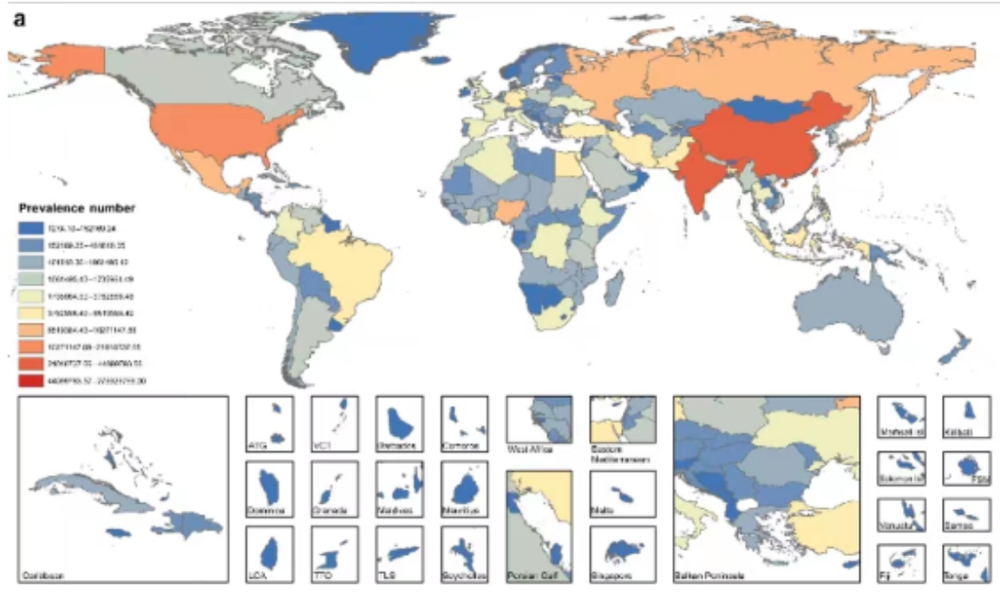

第 5 章 GBD 数据可视化 -绘制地图
5.1 sf包
5.1.1 读取文件
map <- st_read("data/世界国家/世界国家.shp")## Reading layer `世界国家' from data source
## `D:\OneDrive - b.sxmu.edu.cn\03-yh学习\00-小论文\03-GBD\GBD_yh_test\data\世界国家\世界国家.shp'
## using driver `ESRI Shapefile'
## Simple feature collection with 247 features and 10 fields
## Geometry type: MULTIPOLYGON
## Dimension: XY
## Bounding box: xmin: -180 ymin: -90 xmax: 180 ymax: 83.63
## CRS: NAmap2 <- read_sf("data/世界国家/世界国家.shp") # 推荐读取方式
class(map)## [1] "sf" "data.frame"class(map2)## [1] "sf" "tbl_df" "tbl" "data.frame"5.1.2 查看shp文件
colnames(map)## [1] "OBJECTID" "NAME" "FENAME"
## [4] "FCNAME" "SOC" "POP"
## [7] "ELEMID" "SHAPE_LENG" "SHAPE_AREA"
## [10] "ID1" "geometry"5.1.3 设定地图文件的坐标参考系
map <- st_set_crs(map,4326)5.1.4 简单绘制世界地图
ggplot(data=map)+
geom_sf()
5.2 利用 ggplot2 绘制地图
5.2.1 读取 GBD 数据
GBD <- read.csv("data/national HIV.csv")
colnames(GBD)## [1] "measure" "location" "sex" "age"
## [5] "cause" "metric" "year" "val"
## [9] "upper" "lower"5.2.2 读取 location 数据
GBD 的国家（或地区）名与地图上的国家（或地区）名并不能完全匹配，因此通过两个数据的地区直接连接会产生大量的 NA 值。 location 数据是我已经整理好的，用于连接 GBD 和地图数据的中间数据。它有三列，分别为 location,location2,location3。其中 location 与 GBD 的 location 完全一致;location2 与 map 数据的 FENAME 列完全一致； location3 与 map 数据的 NAME 列完全一致。
# 读取 location 数据
location <- read.csv("data/location.csv")
colnames(location)## [1] "location" "location2" "location3"我们可以通过这个 location 数据实现 GBD 数据与 map 数据的连接合并。
5.2.3 数据的合并联接
tidyverse 包中的 join 函数可以实现两个数据的合并联接。根据目的不同，join 函数可以分为： left_join(),inner_join(),full_join() 等多个函数。它们的具体功能可以参考本次教案 join 函数讲解 ppt。
首先，我们合并 GBD 数据与 location 数据：
GBD <- left_join(GBD,location,by="location")
colnames(GBD)## [1] "measure" "location" "sex" "age"
## [5] "cause" "metric" "year" "val"
## [9] "upper" "lower" "location2" "location3"然后，我们再通过 location2/location3 与 map 数据合并。
df <- left_join(map,GBD,by=c("NAME"="location3"))
# df <- na.omit(df) # 直接删除不太好, 南极洲都被删除了
df## Simple feature collection with 2657 features and 21 fields
## Geometry type: MULTIPOLYGON
## Dimension: XY
## Bounding box: xmin: -180 ymin: -90 xmax: 180 ymax: 83.63
## Geodetic CRS: WGS 84
## First 10 features:
## OBJECTID NAME FENAME FCNAME SOC POP ELEMID
## 1 1 <NA> <NA> <NA> <NA> 0 0
## 2 1 <NA> <NA> <NA> <NA> 0 0
## 3 1 <NA> <NA> <NA> <NA> 0 0
## 4 1 <NA> <NA> <NA> <NA> 0 0
## 5 1 <NA> <NA> <NA> <NA> 0 0
## 6 1 <NA> <NA> <NA> <NA> 0 0
## 7 1 <NA> <NA> <NA> <NA> 0 0
## 8 1 <NA> <NA> <NA> <NA> 0 0
## 9 1 <NA> <NA> <NA> <NA> 0 0
## 10 1 <NA> <NA> <NA> <NA> 0 0
## SHAPE_LENG SHAPE_AREA ID1 measure
## 1 154 27.51 1 Deaths
## 2 154 27.51 1 Deaths
## 3 154 27.51 1 Deaths
## 4 154 27.51 1 Deaths
## 5 154 27.51 1 Deaths
## 6 154 27.51 1 Deaths
## 7 154 27.51 1 Deaths
## 8 154 27.51 1 Deaths
## 9 154 27.51 1 Deaths
## 10 154 27.51 1 Deaths
## location sex age
## 1 Guam Male Age-standardized
## 2 Guam Female Age-standardized
## 3 Guam Both Age-standardized
## 4 South Sudan Male Age-standardized
## 5 South Sudan Female Age-standardized
## 6 South Sudan Both Age-standardized
## 7 Taiwan (Province of China) Male Age-standardized
## 8 Taiwan (Province of China) Female Age-standardized
## 9 Taiwan (Province of China) Both Age-standardized
## 10 Palestine Male Age-standardized
## cause metric year val upper lower
## 1 HIV/AIDS Rate 1990 1.62013 3.48241 0.38473
## 2 HIV/AIDS Rate 1990 0.18891 0.43887 0.04390
## 3 HIV/AIDS Rate 1990 0.95707 2.04443 0.22247
## 4 HIV/AIDS Rate 1990 4.83394 15.15071 1.76827
## 5 HIV/AIDS Rate 1990 5.73258 16.86650 2.20436
## 6 HIV/AIDS Rate 1990 5.24118 16.24245 1.96614
## 7 HIV/AIDS Rate 1990 0.05882 0.06455 0.05331
## 8 HIV/AIDS Rate 1990 0.02084 0.02287 0.01900
## 9 HIV/AIDS Rate 1990 0.04046 0.04352 0.03762
## 10 HIV/AIDS Rate 1990 0.08099 0.09625 0.06313
## location2 geometry
## 1 <NA> MULTIPOLYGON (((-88.73 48.3...
## 2 <NA> MULTIPOLYGON (((-88.73 48.3...
## 3 <NA> MULTIPOLYGON (((-88.73 48.3...
## 4 <NA> MULTIPOLYGON (((-88.73 48.3...
## 5 <NA> MULTIPOLYGON (((-88.73 48.3...
## 6 <NA> MULTIPOLYGON (((-88.73 48.3...
## 7 <NA> MULTIPOLYGON (((-88.73 48.3...
## 8 <NA> MULTIPOLYGON (((-88.73 48.3...
## 9 <NA> MULTIPOLYGON (((-88.73 48.3...
## 10 <NA> MULTIPOLYGON (((-88.73 48.3...5.2.4 绘制属性地图
fig1 <- df |>
filter(measure=="Incidence") |>
filter(year==2019) |>
filter(sex=="Both") |>
ggplot()+
geom_sf(aes(group=NAME,fill=val),color=alpha("white",0.2))
fig1
5.2.5 尺度变换：限制经纬度获得小地图
fig2 <- fig1+
coord_sf(xlim = c(0,50),ylim = c(-30,0))
fig2
后续可以通过 patchwork 进行图片的拼接。
5.2.6 颜色变换
5.2.6.1 scale_fill_gradient2()
fig2+scale_fill_gradient2(low = "green",
mid = "yellow",midpoint = 250,
high = "darkred")
5.2.6.2 scale_fill_distiller()
fig2+scale_fill_distiller(palette="Spectral",# 色盘
name="ASR")
5.2.6.3 scale_fill_manual() 离散颜色
包括前面讲过的 scale_fill_lancet 等函数也可以用在这里。但是我们的数据val 本身是离散的，需要进行数据变换，转换成分类变量，然后转化为因子，才能用离散颜色。
library(ggsci)
fig2+scale_fill_manual()简书上有关于地图配色的文章，讲得挺完善的，大家可以去学习一下：https: /www.jianshu.com/p/d85aa0b4fb1c
5.3 课后作业
- 文档里有一份胃癌的数据，请绘制疾病地图，展示 2019 年男性胃癌年龄标准化发病率的空间分布
rm(list=ls())
library(tidyverse)
library(sf)
# 读取GBD数据
GBD <- read.csv("data/stomach cancer.csv",header = T)
location <- read.csv("data/location.csv",header = T)
GBD <- left_join(GBD,location,by="location")
colnames(GBD)## [1] "measure" "location" "sex" "age"
## [5] "cause" "metric" "year" "val"
## [9] "upper" "lower" "location2" "location3"# 读取地图数据
map <- read_sf("data/世界国家/世界国家.shp")
colnames(map)## [1] "OBJECTID" "NAME" "FENAME"
## [4] "FCNAME" "SOC" "POP"
## [7] "ELEMID" "SHAPE_LENG" "SHAPE_AREA"
## [10] "ID1" "geometry"# 合并，筛选
df <- map |>
left_join(GBD,by=c("NAME"= "location3")) |>
filter(year==1990) |>
filter(sex=="Male") |>
filter(age=="Age-standardized") |>
filter(measure=="Incidence")# 画图
ggplot(df) +
geom_sf(aes(fill=val))+
scale_fill_distiller(palette="Spectral") 
- 使用 facet 分面系统，同时展示 1990 和 2019 两年男性胃癌不同测量指标（包括 incidence,precalence 等）的全球分布。
rm(list=ls())
# 读取GBD数据
GBD <- read.csv("data/stomach cancer.csv",header = T)
location <- read.csv("data/location.csv",header = T)
GBD <- left_join(GBD,location,by="location")
colnames(GBD)## [1] "measure" "location" "sex" "age"
## [5] "cause" "metric" "year" "val"
## [9] "upper" "lower" "location2" "location3"unique(GBD$cause)## [1] "Stomach cancer"unique(GBD$measure)## [1] "Deaths"
## [2] "Prevalence"
## [3] "DALYs (Disability-Adjusted Life Years)"
## [4] "YLDs (Years Lived with Disability)"
## [5] "Incidence"
## [6] "YLLs (Years of Life Lost)"# 读取地图数据
map <- read_sf("data/世界国家/世界国家.shp")
colnames(map)## [1] "OBJECTID" "NAME" "FENAME"
## [4] "FCNAME" "SOC" "POP"
## [7] "ELEMID" "SHAPE_LENG" "SHAPE_AREA"
## [10] "ID1" "geometry"# 合并，筛选
df <- map |>
left_join(GBD,by=c("NAME"= "location3")) |>
filter(year%in%c(1990,2019)) |>
filter(sex=="Male") |>
filter(age=="Age-standardized") |>
mutate(year=factor(year)) |>
mutate(measure=factor(measure,
levels = c("Incidence","Prevalence","Deaths",
"YLDs (Years Lived with Disability)",
"YLLs (Years of Life Lost)","Deaths"),
labels = c("Incidence","Prevalence","Deaths",
"YLDs (Years Lived with Disability)",
"YLLs (Years of Life Lost)","Deaths"))) |>
na.omit()# 画图
ggplot(df) +
geom_sf(aes(fill=val))+
facet_grid(measure~year)+
scale_fill_distiller(palette="Spectral") 
- 说说如何实现下面图的绘制？
